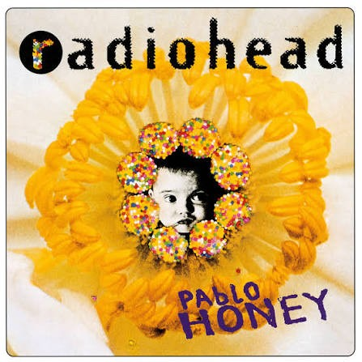
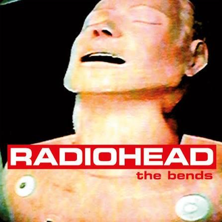
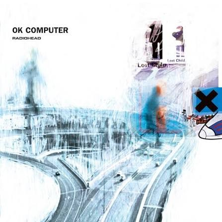
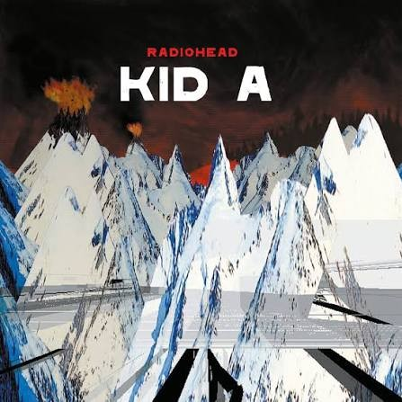
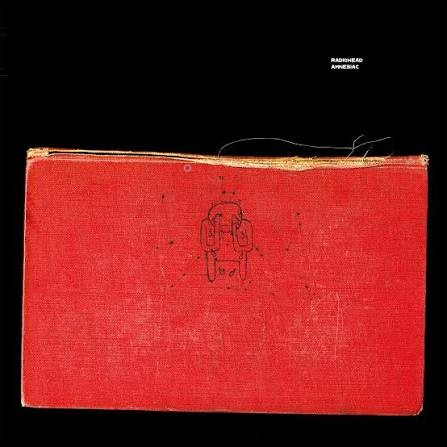
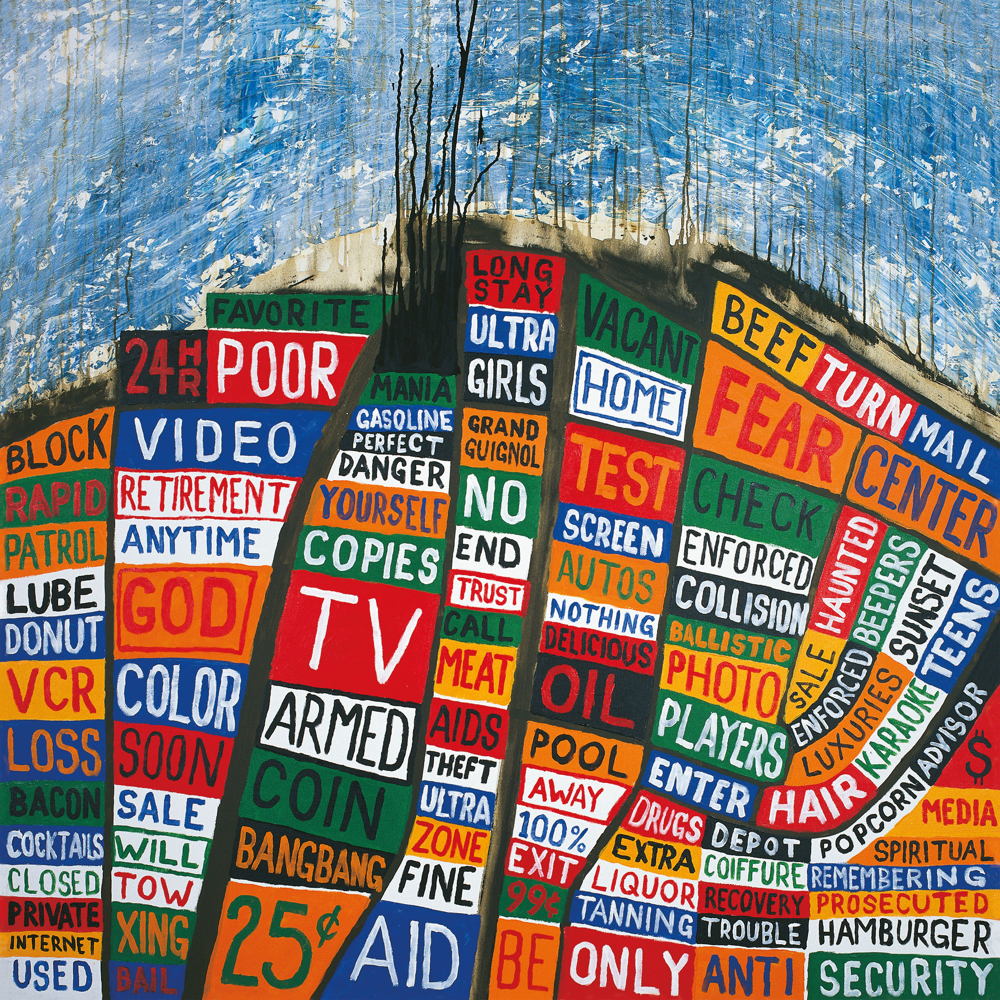
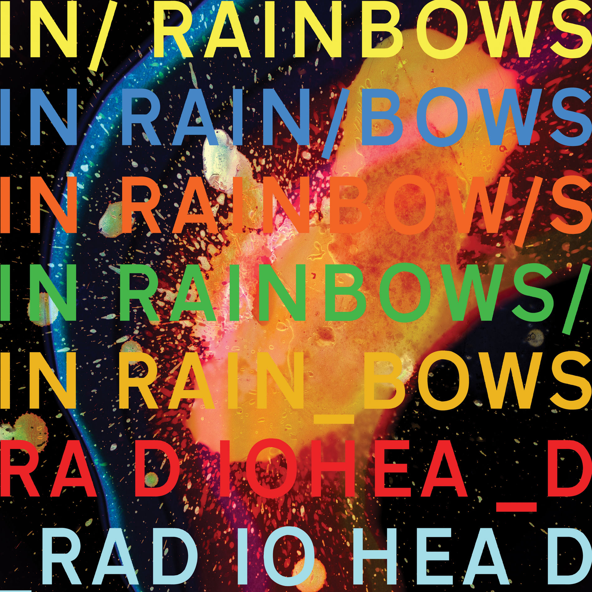
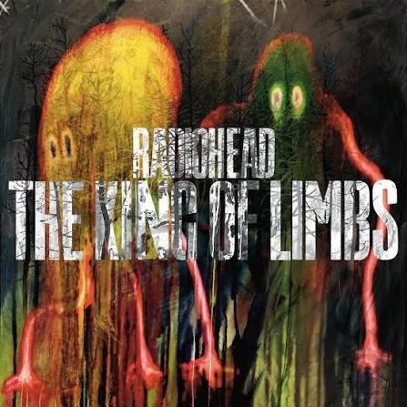
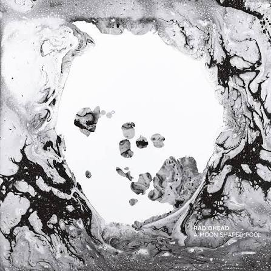

Pablo Honey
Огноо: 1993
Газар: Chipping Norton Recording Studios, Оксфордшир
- You
- Creep
- How Do You?
- Stop Whispering
- Thinking About You
- Anyone Can Play Guitar
- Ripcord
- Vegetable
- Prove Yourself
- I Can't
- Lurgee
- Blow Out
Цомгийн хавтас дээр хулганыг аваачих эсвэл Tab дарж фокуслаад томруулж, “Эргүүлэх” товчоор нэр, он, бичлэгийн газрыг хараарай.

Огноо: 1993
Газар: Chipping Norton Recording Studios, Оксфордшир

Огноо: 1995
Газар: RAK Studios, Лондон

Огноо: 1997
Газар: St Catherine's Court, Бат

Огноо: 2000
Газар: Guillaume Tell Studios, Парис

Огноо: 2001
Газар: Medley Studios, Копенгаген

Огноо: 2003
Газар: Ocean Way Recording, Холливуд

Огноо: 2007
Газар: Tottenham House, Уилтшир

Огноо: 2011
Газар: Оксфордшир, Англи

Огноо: 2016
Газар: La Fabrique, Сен-Реми-де-Прованс